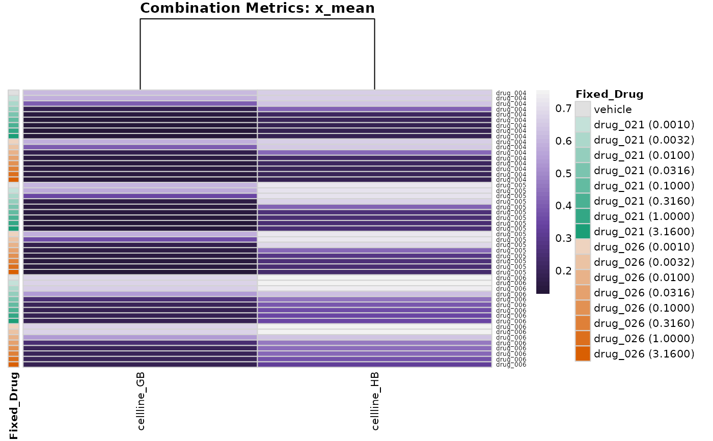
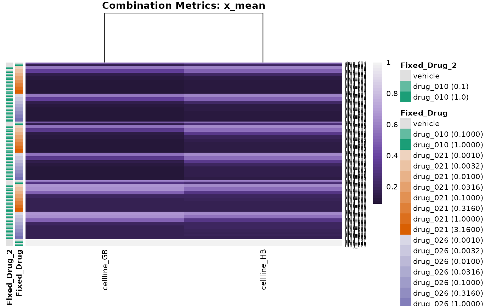

Plot heatmap with annotations for combo metrics data
pheatmap_with_anno_combo_metrics.RdPlots a heatmap for metrics data (e.g., "xc50", "x_inf") covering both Single Agents and Combinations. Rows are sorted alphabetically by the primary drug, prioritizing Single Agent conditions first, followed by combinations sorted by co-treatment name and concentration.
Usage
pheatmap_with_anno_combo_metrics(
dt_metrics,
dt_metrics_capped = NULL,
normalization_type = "GR",
metric = "x_mean",
fit_source = "gDR",
hm_title = NA,
colors_vec = NULL,
no_breaks = 50,
cluster_rows = FALSE,
cluster_cols = TRUE,
distfun = compute_distances,
annotation_col = NULL,
annotation_colors = NULL,
max_hm_lbl_length = gDRutils::get_settings_from_json("MAX_HM_LBL_LENGTH",
system.file(package = "gDRplots", "settings.json"))
)Arguments
- dt_metrics
data.tablerepresenting data from themetricsassay, outputted bygDRutils::convert_se_assay_to_dt. Must containDrugName,DrugName_2,cotrt_value, andCellLineName.- dt_metrics_capped
data.tablerepresenting data from the"Metrics"assay, the same asdt_metricsbut with capped values withgDRutils::cap_assay_infinities- normalization_type
string with normalization types to be selected one of: "GR" ("GRvalue") or "RV" ("RelativeViability")
- metric
string name of the metric; one of: "xc50" ("GR50" or "IC50" - respectively depending on
normalization_type), "x_max" ("GR Max" or "E Max") or "x_mean" ("GR Mean" or "RV Mean"); but the values from any numeric column can be displayed.- fit_source
string source name for metrics
- hm_title
string plot title
- colors_vec
character vector of colors (valid name or hex) used in heatmap; note that the first color will be assigned to the min value, and the last one - to the max
- no_breaks
numeric number of breaks on scale used for mapping values to colors
- cluster_rows
logical flag whether rows should be clustered; the dendrogram will not be shown for the matrix with any dimension greater than 200.
- cluster_cols
logical flag whether columns should be clustered; the dendrogram will not be shown for the matrix with any dimension greater than 200.
- distfun
function used to compute the distance (dissimilarity) between both rows and columns; used for the dendrogram when
cluster_rowsorcluster_colsis set to TRUE the default iscompute_distancesusing Spearman method.- annotation_col
data.tablethat specifies the annotations shown above the heatmap. Each row defines the features for a specific column. The columns in the data and in the annotation are matched using corresponding names from the requiredCellLineNamecolumn. Note that color schemes takes into account if variable is continuous or discrete.- annotation_colors
named list for specifying
annotation_colandannotation_rowtrack colors manually; note list is named with annotation name (column names ofannotation_row- withoutDrugNameand column names ofannotation_col- withoutCellLineName), each list item is named vector with valid color name for each value described inannotation_rowand inannotation_col- respectively. Not described elements will be colored in default.- max_hm_lbl_length
numeric value for the maximum number of characters in the label; if set to Inf, no trimming will be performed; for better readability, it is recommended to use the default number.
Value
A named list with elements:
dataa list containing the information visualized in the heatmap:matrixdata shown in the heatmap for the selected metric.annotation_rowa table with row annotations (auto-generated).annotation_cola table with column annotations, if provided.
heatmapthepheatmapobject.
Author
Bartosz Czech czech.bartosz@external.gene.com
Examples
mae <- gDRutils::get_synthetic_data("combo_matrix_small")
se <- mae[[gDRutils::get_supported_experiments("combo")]]
dt_metrics <- gDRutils::convert_se_assay_to_dt(se = se,
assay_name = "Metrics")
output <- pheatmap_with_anno_combo_metrics(dt_metrics = dt_metrics,
normalization_type = "RV",
metric = "x_mean")
hm_1 <- output[["heatmap"]]
ggpubr::as_ggplot(hm_1[["gtable"]])

annotation_manual <- data.table::data.table(
CellLineName =
c("cellline_AA", "cellline_GB", "cellline_HB"),
mut_A = c(0, 1, 1),
mut_B = c("yes", "yes", "no")
)
annotation_map <- list(
mut_A = c("1" = "coral", "0" = "cadetblue"),
mut_B = c("yes" = "black", "no" = "grey90")
)
output <- pheatmap_with_anno_combo_metrics(dt_metrics = dt_metrics,
metric = "ec50",
normalization_type = "GR",
annotation_col = annotation_manual,
annotation_colors = annotation_map,
hm_title = get_hm_title(
normalization_type = "GR",
metric = "EC50 for combo data ",
dataset_name = "Combo data"))
mae <- gDRutils::get_synthetic_data("combo_triple")
se <- mae[[gDRutils::get_supported_experiments("combo")]]
dt_metrics <- gDRutils::convert_se_assay_to_dt(se = se,
assay_name = "Metrics",
merge_additional_variables = TRUE)
output <- pheatmap_with_anno_combo_metrics(dt_metrics = dt_metrics,
normalization_type = "RV",
metric = "x_mean")
hm_4 <- output[["heatmap"]]
ggpubr::as_ggplot(hm_4[["gtable"]])
